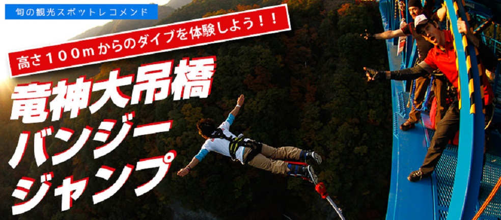
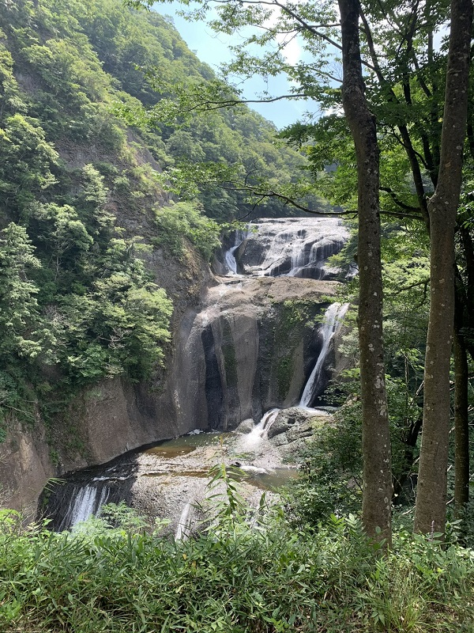

竜神大吊橋 バンジージャンプ
日本で二番目 高さはなんと100メートル
竜の形をした湖上に架かる、歩行者専用の橋として日本最大級の長さを誇る竜神大吊橋は全長375メートル。それだけで存在感あふれる景観をつくりだし、毎年何万人もの観光客を魅了している大人気スポットです。四季折々姿を変える圧巻の絶景を臨み、湖面に向かってジャンプします。五月には鯉のぼり、秋にはきれいな紅葉とともに最恐の飛び降り体験ができるのは竜神大吊橋だけ！
住所：茨城県常陸太田市天下町2133-６
料金は一回目は17000円、同日二回目以降は8000円となります。そこにプラスでプロのカメラマンさんにジャンプの写真を撮っていただくと+3000円。バンジージャンプなんてそう飛ぶ機会がないので個人的にこのオプションはおすすめです

竜神大吊橋のそばにはほかにもいろいろな観光名所がたくさんあります。写真を出しているのは袋田の滝です。滝のとても近くまで行くことができ、まじかで自然のマイナスイオンを感じることができる避暑地観光スポットとなっています。 また茨城県ではおそばが有名でとてもおいしいので観光に行った際はぜひ食べてみてくださいね。